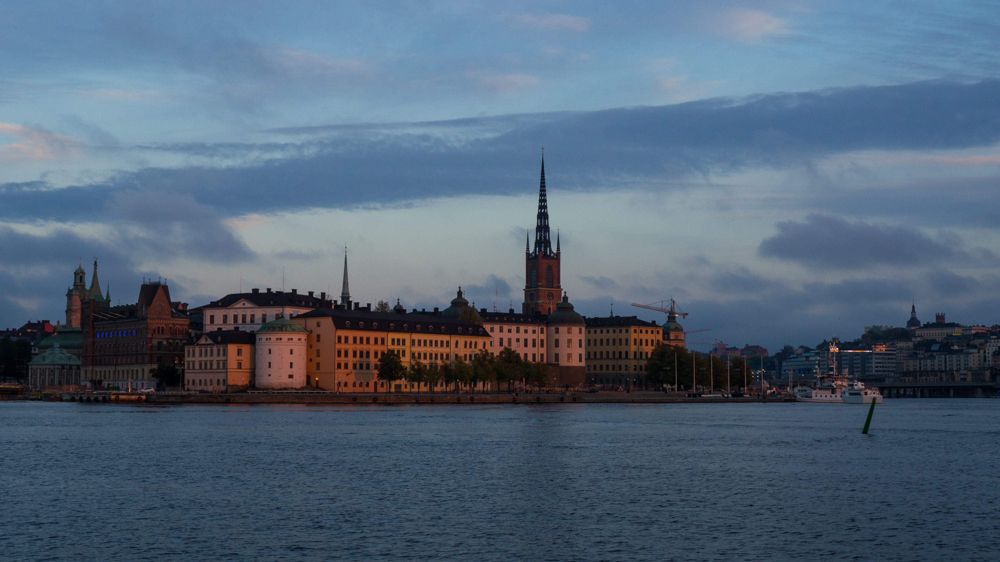

Con estas líneas doy recibimiento al usuario curioso que ha dado por encontrarse con esta página. En esta sección se encuentran pensamientos, ideas, conclusiones, pero sobre todo preguntas que han surgido en los viajes, en los paseos y en los momentos de reflexión que permite la pausa una vez el viaje ha concluido.

Sirva esta entrada como bienvenida a este pequeño espacio. Las fotos podrán disfrutarlas en la galería de proyectos. Para ponerse en contacto conmigo, puede rellenar el formulario de la página correspondiente.
Espero que el usuario pueda encontrar en estas fotografías lo que he podido ver, los paisajes, las ciudades y el vasto mundo, y encuentre, si hay fortuna, alguna inspiración en lo que comparto.